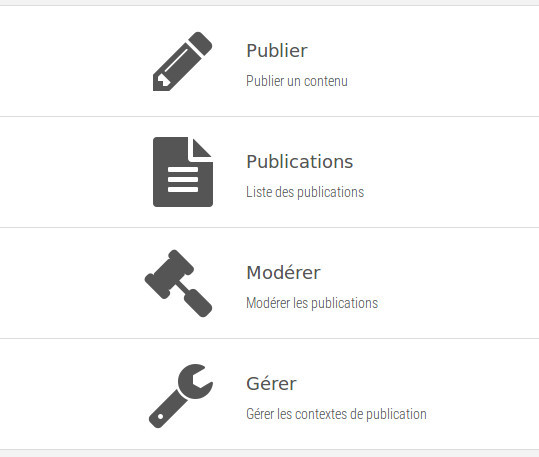

En entrant dans l'application, un menu est présenté dont le contenu
dépend des droits dont l'utilisateur dispose.
 Il peut donc y avoir :
- Publier : permet de publier directement une information
dans un des contextes de publication auxquels à droit d'accéder le
rédacteur
- Publications : permet d'accéder à la gestion
des publications (publications de la personne connectée et/ou
publications de l'établissement, en fonction des droits)
- Modérer : donne accès à la modération
des publications qui dépendent de l'utilisateur connecté
(publications émises par un contributeur)
- Gérer : permet d'accéder à la gestion
des contextes de publication (paramétrage des contextes,
rôles, ...)
Lors de l'utilisation de l'application de publication de contenus,
le menu en haut de l'écran permet de basculer entre les diverses
fonctionnalités.